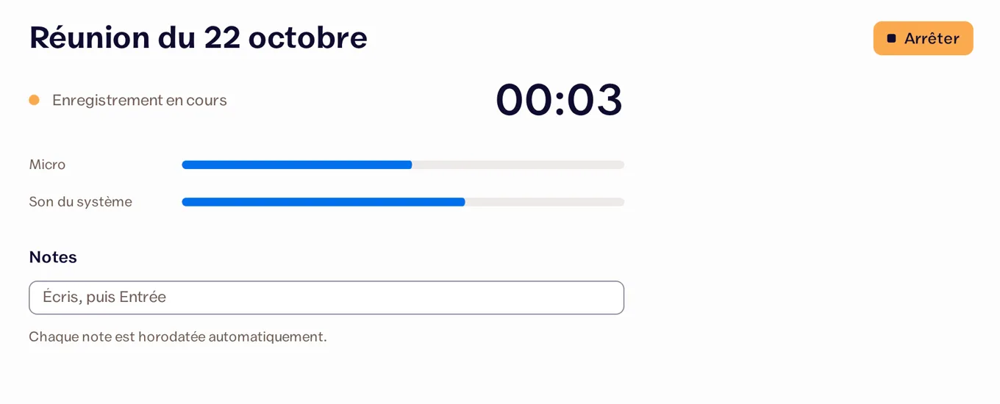
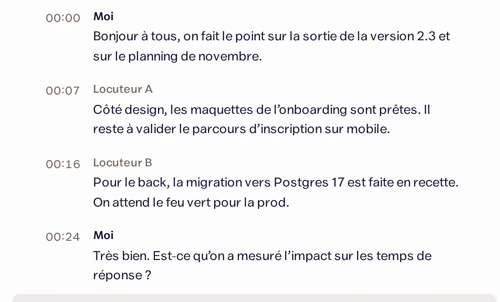
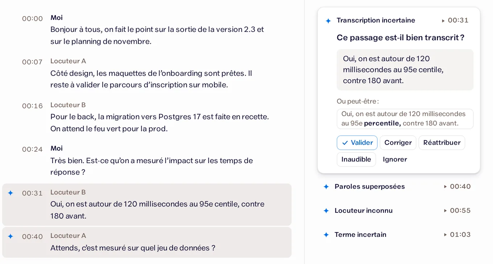

Arrête de taper.
Parle.
Tu parles, et Barnaby écrit pour toi, dans n’importe quelle app. Il écrit aussi tout ce qui se dit pendant tes réunions.
Gratuit, pour Windows, Mac et Linux.
Salut Léa, je te confirme la réunion de jeudi à 14 h. J’apporte les maquettes.
Barnaby en vidéo
Ce que fait Barnaby
Il écrit ce que tu dis
Un mail, un message, un document : au lieu de taper, tu parles. Ton texte apparaît là où tu écrivais.
Il écrit tes réunions
En visio ou autour d’une table, Barnaby écoute la réunion. À la fin, tu as tout le texte et, si tu veux, un résumé avec les décisions et les choses à faire.
Ce qui compte
Gratuit
Pas de compte, pas d’abonnement, pas de version payante cachée.
Open source
Le code est sur GitHub, sous licence MIT.
Sur ta machine
Par défaut, ta voix ne quitte pas ton ordinateur.
Passer en ligne, c’est ton choix.
Il te dit quand il doute
Chaque passage incertain porte une étincelle . Tu relis ces quelques minutes au lieu de tout réécouter.
Une réunion avec Barnaby
-
Barnaby écoute
Tu lances l’enregistrement. Barnaby capte ton micro et le son de l’ordinateur, jusqu’à la fin de la réunion.

-
Barnaby écrit tout
À la fin, il écrit toute la réunion, avec une ligne par personne qui parle.

-
Tu vérifies, puis tu envoies
Les passages dont il n’est pas sûr portent une étincelle. Tu les vérifies, puis tu ranges la réunion dans un dossier ou tu l’envoies à ton outil.

Captures de l’app, avec une réunion d’exemple.
L’installer
-
Télécharge Barnaby
Choisis ton système, puis ouvre le fichier téléchargé.
-
Télécharger
Windows Recommandé pour toi
-
Télécharger
Mac Recommandé pour toi
-
Télécharger
Linux Recommandé pour toi
Version 0.4.3, gratuite et open source. À l’installation, Windows et le Mac affichent un avertissement, car l’app n’est pas signée : c’est normal, voici quoi faire.
-
-
Laisse-toi guider
Au premier lancement, Barnaby t’explique tout, étape par étape, et prépare ce dont il a besoin.
-
Parle
Appuie sur Ctrl Alt Espace, parle, puis appuie encore sur les mêmes touches. Sur Mac, c’est Cmd Shift Espace.
-
Enregistre une réunion
Appuie sur Ctrl Shift R pour commencer, et encore une fois pour finir. Sur Mac, c’est Cmd Shift R. Barnaby te prévient quand la réunion est prête.
Questions
C’est vraiment gratuit ?
Oui. La seule chose payante est optionnelle : écrire les réunions en ligne avec Mistral, plus rapide sur un petit ordinateur. Mistral te facture alors environ 0,18 $ par heure de réunion.
Où vont mes enregistrements ?
Ils restent sur ton ordinateur. Par défaut, le son d’une réunion est effacé dès que tu as fini de la relire. Rien ne part en ligne sans que tu l’aies choisi.
Il me faut quel ordinateur ?
La dictée marche bien sur un ordinateur ordinaire. Pour les réunions, un ordinateur modeste met du temps à tout écrire. Dans ce cas, Mistral le fait plus vite, en ligne.
Pourquoi Windows affiche un avertissement à l’installation ?
C’est normal : l’installeur n’est pas signé, car la signature coûte cher pour un projet gratuit. Clique sur « Informations complémentaires », puis sur « Exécuter quand même ».
Et les personnes que j’enregistre ?
Préviens-les. Avant chaque réunion, Barnaby te propose un court texte à leur lire, qui dit ce qui est enregistré et où ça va.
Et sur Mac ?
Barnaby marche sur les Mac avec puce Apple (M1 et plus récents), avec macOS 14.2 Sonoma ou plus récent. Au premier lancement, macOS dit qu’il ne peut pas vérifier l’app, car elle n’est pas signée chez Apple : ouvre Réglages Système, puis Confidentialité et sécurité, et clique sur « Ouvrir quand même ». Barnaby te demandera ensuite l’accès au micro, au son de l’ordinateur et à l’Accessibilité, qui lui sert à coller le texte. Après une mise à jour, macOS peut te les redemander.
Qui l’a fait
Moi, c’est Jon, développeur indépendant à Genève. J’ai construit Barnaby et je le partage gratuitement, code compris.
Merci
Barnaby tient debout grâce à d’autres projets ouverts. Handy a montré la voie de la dictée libre. Les voix passent par whisper.cpp, Parakeet, sherpa-onnx, pyannote et Silero VAD. L’app est construite avec Tauri, et la transcription en ligne passe par Mistral.
Soutenir le projet
Barnaby restera gratuit. Pour soutenir la suite, tu peux offrir un café à Jon.